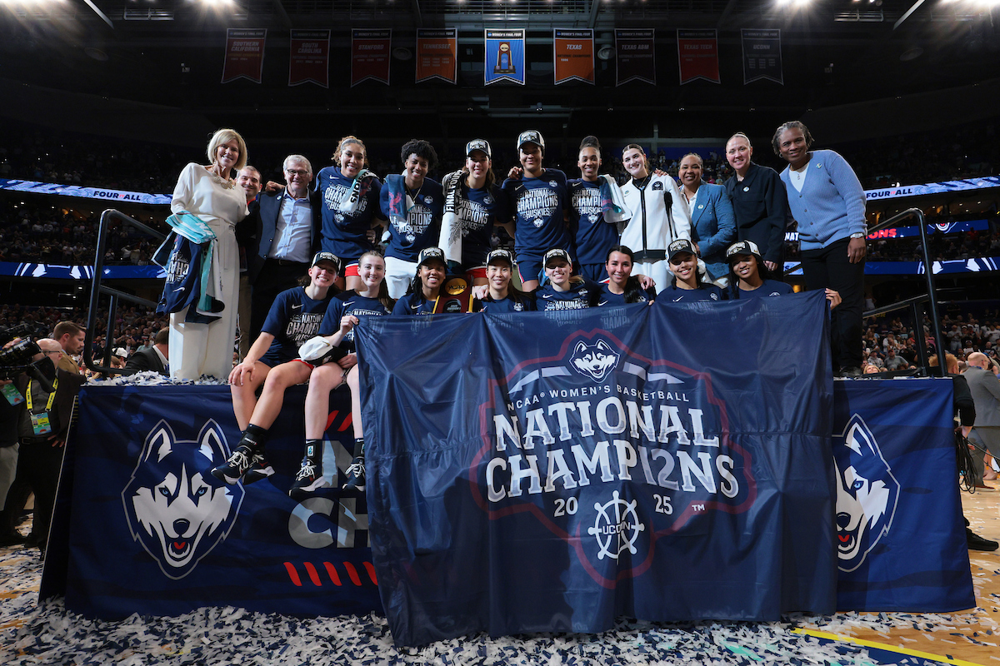

Dozen Dynasty: UConn Clinches 12th National Title, Cementing Legacy
Through pain, pressure, and a rivalry forged in fire, UConn rose once more—carving their legacy into history with every shot, every stop, and one unforgettable championship night.